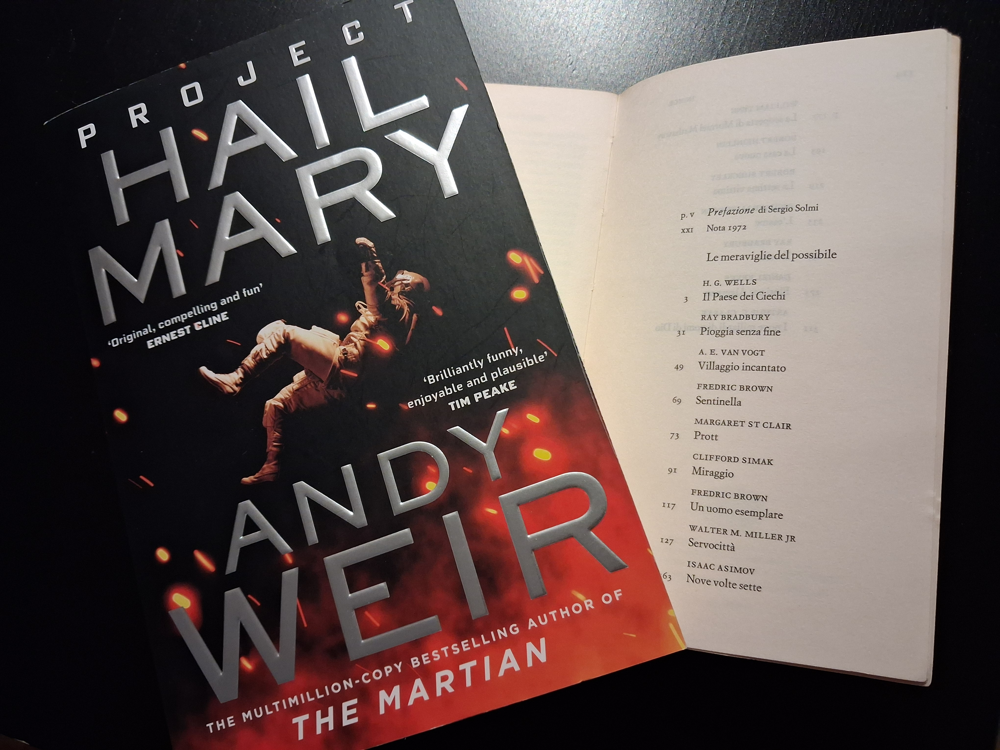

L’incontro con l’altro
Project Hail Mary e il bisogno di comunicare con il diverso da noi

Un incontro che sicuramente non poteva mancare a Casa Donatalina è quello con «Project Hail Mary» di Andy Weir.
Se vi piace la fantascienza dovreste leggerlo. Se NON vi piace la fantascienza, dovreste leggerlo. Perché questo libro (peraltro trasposto in un film pregevolissimo) non è imperdibile solo per l’accuratezza scientifica o per la trama — peraltro incentrata sulla poco originale necessità di salvare la Terra da una catastrofe imminente — ma soprattutto sull’incontro con l’altro; sull’umanissima, fragilissima, difficilissima necessità di comunicare con chi è altro da noi.
In questo senso, Andy Weir fa un’operazione di grande maestria, perché tiene il lettore attaccato alla pagina mentre gli mostra la fatica dell’essere umano nel coniugare le proprie competenze scientifiche, i propri sentimenti, il contatto con l’altro, con lo straniero. E riesce a non essere mai noioso, né nel descrivere problemi e soluzioni ingegneristiche, né nel mostrare sentimenti e problemi di comunicazione.
Nel leggerlo, e nel rileggerlo altre volte, ho pensato: ah, sì, ne so qualcosa. Di questa doppia anima frastornata, soprattutto: lo scienziato che ha scarsissime capacità sociali, lavora rinchiuso nel suo laboratorio di numeri e fatti, poco avvezzo all’interazione con le persone; e a un certo punto si ritrova forzato dagli eventi ad aprire nuove frontiere di comunicazione con l’altro, con il diverso, anzi diversissimo.
Ma non c’è solo questo: il libro è interessante anche perché viviamo in un’epoca in cui questo forzato incontro con l’altro è quasi onnipresente, di certo difficile da ignorare: i fenomeni migratori (sia quelli causati dalle catastrofi, sia quelli resi possibili semplicemente da una maggiore mobilità mondiale) stanno ridisegnando il pianeta e la società che conosciamo in modi drammatici e inediti, e ci obbligano tutti (scienziati, non-scienziati, tutti) a confrontarci con l’altro. A ridefinire, in un certo senso, cos’è umano.
Questa linea di riflessione è quella che mi ha portata a proporvi questo incontro illustrandolo con una foto che mette insieme Project Hail Mary con una vecchia edizione di «Le meraviglie del possibile» (Einaudi).
In questa antologia trovate due racconti che a me fanno venire la pelle d’oca per quanto sono attuali (pur essendo stati scritti decenni fa). Il primo è ovviamente «Sentinella», di Fredric Brown. Se non lo avete letto, cercatelo, perché è un racconto brevissimo ma geniale nel mostrarci cosa significa «noi» e «loro». E se avete coraggio, già che ci siete leggete anche «Fiori per Algernon», di Daniel Keyes. Questo è meno direttamente collegato con il tema «incontro con l’altro», ma è sempre nel filone «ridefinire cos’è umano».
Perché due cose sono profondamente umane: il linguaggio e la violenza. La sopraffazione sugli altri, la diffidenza nei confronti del diverso, sono due facce della stessa mancanza di comunicazione.
Qualcuno una volta mi ha raccontato che un ragazzo italiano, durante la Seconda Guerra Mondiale, salvò la pelle perché conosceva un’altra lingua. Si trovò in mezzo a un rastrellamento, nazisti che portavano via o fucilavano civili inermi; aveva studiato un po’ di tedesco e provò a parlare con l’ufficiale nazista. Non so bene cosa gli disse, ma il soldato ebbe qualche esitazione a fucilare qualcuno che parlava la sua lingua: non riusciva più a vederlo come un oggetto, un qualcosa che si poteva annientare. Il prigioniero era diventato una persona.
Vi racconto questa storia, questa mescolanza di libri e vecchie storie raccontate a voce, perché penso che oggi più che mai la scienza e la comunicazione debbano viaggiare parallele: abbiamo bisogno della scienza per affrontare i disastri (ambientali, bellici, sanitari) del nostro tempo, ma abbiamo anche bisogno come non mai di comunicare con l’altro.